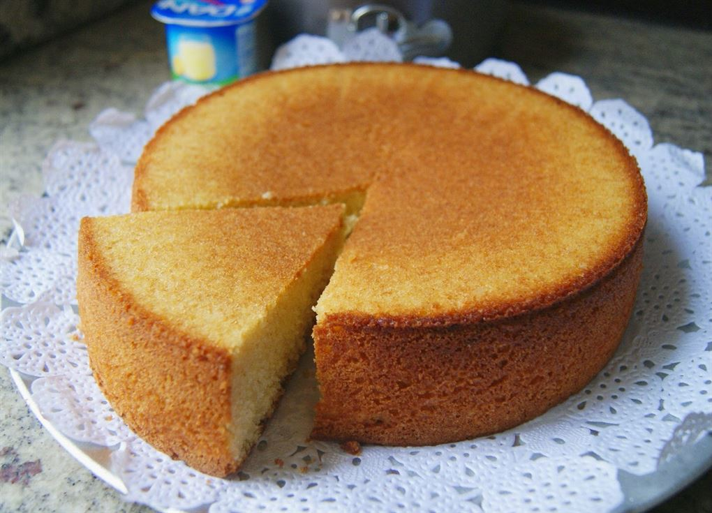

Bienvenidos a Recetas Web
Descubre como preparar deliciosas recetas en unos simples pasos.
Explora nuestras recetas y consejos para llevar tus habilidades de repostería al siguiente nivel.
Ingredientes de la Torta de Yogurt
- 1 yogur natural
- 1 medida de yogur de aceite
- 2 medidas de yogur de azúcar
- 3 medidas de yogur de harina
- 3 huevos
- 1 sobre de levadura
- Ralladura de un limón (opcional)

Preparación de la Torta de Yogurt
- Precalentar el horno a 180°C.
- En un bol, batir los huevos con el azúcar hasta obtener una mezcla espumosa.
- Añadir el yogur y el aceite, y mezclar bien.
- Tamizar la harina con la levadura e incorporar poco a poco a la mezcla anterior.
- Añadir la ralladura de limón si se desea.
- Verter la mezcla en un molde previamente engrasado y enharinado.
- Hornear durante 35-40 minutos, o hasta que al insertar un palillo salga limpio.
- Dejar enfriar antes de desmoldar y servir.
Ingredientes de las Galletas de Chocolate
- 200 g de mantequilla
- 150 g de azúcar moreno
- 100 g de azúcar blanco
- 2 huevos
- 1 cucharadita de extracto de vainilla
- 300 g de harina
- 1 cucharadita de bicarbonato de sodio
- 200 g de chispas de chocolate
Preparación de las Galletas de Chocolate
- Precalentar el horno a 180°C.
- En un bol, batir la mantequilla con los azúcares hasta obtener una mezcla cremosa.
- Añadir los huevos y el extracto de vainilla, y mezclar bien.
- Incorporar la harina y el bicarbonato de sodio tamizados, y mezclar hasta obtener una masa homogénea.
- Añadir las chispas de chocolate y mezclar suavemente.
- Formar pequeñas bolitas con la masa y colocarlas en una bandeja para hornear, dejando espacio entre ellas.
- Hornear durante 10-12 minutos, o hasta que los bordes estén dorados.
- Dejar enfriar antes de retirar de la bandeja y servir.
Ingredientes del Pan de Plátano
- 3 plátanos maduros
- 1/2 taza de mantequilla derretida
- 1 taza de azúcar
- 1 huevo batido
- 1 cucharadita de extracto de vainilla
- 1 cucharadita de bicarbonato de sodio
- 1 pizca de sal
- 1 1/2 tazas de harina

Preparación del Pan de Plátano
- Precalentar el horno a 175°C.
- En un bol, aplastar los plátanos con un tenedor hasta obtener un puré.
- Añadir la mantequilla derretida y mezclar bien.
- Incorporar el azúcar, el huevo batido y el extracto de vainilla, y mezclar hasta integrar.
- Añadir el bicarbonato de sodio, la sal y la harina, y mezclar hasta obtener una masa homogénea.
- Verter la masa en un molde para pan previamente engrasado y enharinado.
- Hornear durante 60-65 minutos, o hasta que al insertar un palillo salga limpio.
- Dejar enfriar antes de desmoldar y servir.
Consejos Generales
- Utiliza ingredientes a temperatura ambiente para una mejor integración.
- No sobrebatas la mezcla para evitar que las preparaciones queden duras.
- Prueba agregar un poco de extracto de vainilla para un toque extra de sabor.
- Si deseas una torta más húmeda, puedes añadir un poco de yogur extra.
- Para una textura más crujiente en las galletas, puedes hornearlas unos minutos más.
- Si prefieres galletas más suaves, reduce el tiempo de horneado en un par de minutos.
- Refrigera la masa de galletas durante 30 minutos antes de hornear para evitar que se expandan demasiado.
- Prueba agregar nueces picadas a tus recetas para un toque crujiente adicional.
- Utiliza plátanos bien maduros para un sabor más dulce y una textura más suave en el pan de plátano.
- Si prefieres un pan de plátano menos dulce, reduce la cantidad de azúcar a 3/4 de taza.
- Guarda el pan de plátano en un recipiente hermético para mantener su frescura.